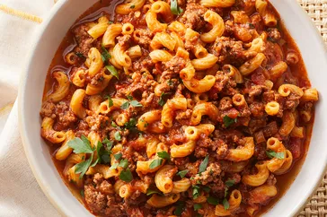

HOME
American goulash

Descrição
American Goulash é um prato americano com carne moída, macarrão e molho de tomate.
Ingredientes
- 500g de carne moída
- 1 cebola média (picada)
- 2 dentes de alho (picados)
- 1 pimentão (opcional, picado)
- 2 xícaras de molho de tomate
- 2 xícaras de caldo de carne ou água
- 1 e 1/2 xícara de macarrão tipo cotovelo
- 1 colher de chá de páprica (opcional)
- Sal e pimenta a gosto
- Queijo ralado (opcional, para finalizar)
Passos
- Em uma panela grande, doure a carne moída em fogo médio, mexendo até ficar bem cozida
- Adicione a cebola, o alho e o pimentão. Refogue até que os vegetais fiquem macios
- Acrescente o molho de tomate, o caldo de carne, a páprica, sal e pimenta. Misture bem
- Adicione o macarrão cru diretamente à panela. Mexa e deixe cozinhar em fogo baixo por 10-12 minutos, ou até que o macarrão esteja al dente e tenha absorvido o sabor do molho.
- Desligue o fogo, ajuste os temperos, se necessário, e, se quiser, finalize com queijo ralado por cima.
- Sirva quente e aproveite!